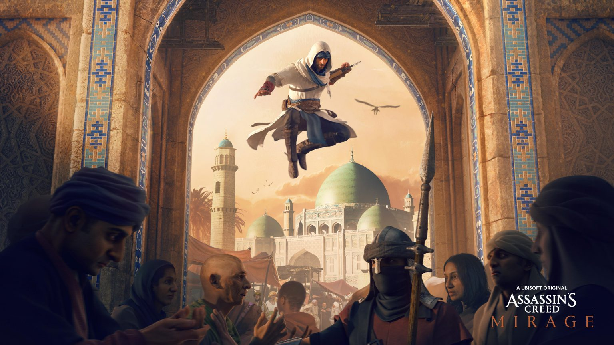

O futuro da saga Assassin’s Creed foi nos revelado com cinco novos jogos e mais uma série com a Netflix. Lugares como Bagdá, Antiga China, Japão Feudal e um misterioso game da franquia com o codinome HEXE foram assuntos da Ubisoft Forward. Continue lendo para saber mais detalhes de Assassin’s Creed.
ASSASSIN'S CREED MIRAGE
Em celebração dos quinze anos desde o lançamento do primeiro Assassin’s Creed, onde nos levam para a terra santa e em seguida Itália, revoluções, mundos antigos e lugares extraordinários.
Voltando as essências dos primeiros jogos da franquia, tanto pela jogabilidade e história. Assassin’s Creed Mirage nos mostra Basim aos dezessete anos, no século IX em Bagdá, vinte anos antes dos acontecimentos de Assassin’s Creed Valhalla.
O Jogo possui uma história mais curta, porém, a volta das cidades urbanas e escaladas para explorar o parkour atende diretamente os fãs mais antigos da série. “Voltamos as raízes da série. Já se passaram quinze anos, queríamos voltar ao jogo de ação e aventura, ao jogo baseado em narrativa. Nós nos concentramos na furtividade, no parkour, e é claro, nos assassinatos” diz Sara Beuliex, diretora narrativa da Ubisoft.
O jogo estará disponível em 2023.
ASSASSIN'S CREED VALHALLA
Segundo o diretor de Valhalla, teremos mais um capitulo da história de Eivor chamada The Last Chapter. Ao que aparenta, Basim (Loky) está no Animus como Eivor.
“The Last Chapter é um arco de missões gratuitas que amarrará bem algumas histórias estabelecidas ao longo do jogo. Veremos Eivor se reunir com alguns personagens-chave, incluindo alguns personagens históricos influentes” diz Gareth Glover, diretor de jogo da Ubisoft. A expansão será distribuida nos próximos meses
ASSASSIN'S CREED CODENOME JADE
O jogo para celular se passará na China Antiga em 215 A.C. (Antes de Cristo), no período da Disnatia Qin. Pela primeira vez na história da franquia, o jogador poderá criar seu próprio personagem. Poderá andar pela muralha da China.